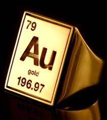

Altın, sembolü "Au" olan ve atom numarası 79 olan kimyasal bir elementtir.
Saf haliyle parlak, hafif kırmızımsı sarı, yoğun, yumuşak, dövülebilir ve sünek bir metaldir ve "tüm kimyasal elementlerin en güzeli" olarak adlandırılmıştır.
Güzelliği onu binlerce yıldır mücevher, madeni para ve sanat eserlerinde kullanmak için cazip kılmıştır
İnsanlar tarafından kullanılan ilk saf metallerden biridir.
geri dön
